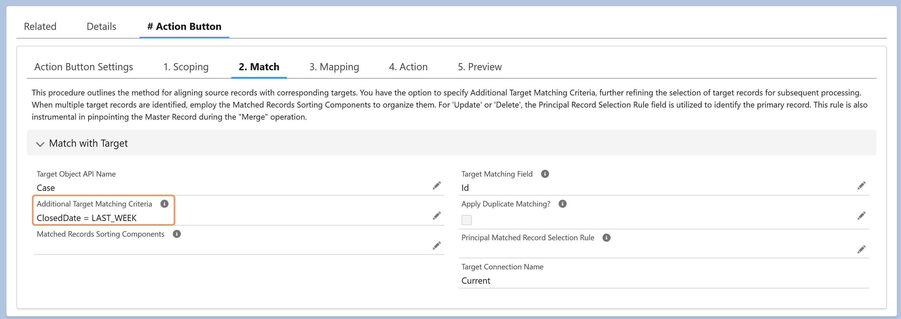

The Additional Target Matching Criteria field lets you append extra SOQL conditions—such as filters or ORDER BY clauses—to the query DSP uses for matching target records.
This enables:
More precise matching by narrowing down candidate target records.
Controlled sorting of matches, especially when combined with the Principal Matched Record Selection Rule.
Use this field to fine-tune how DSP identifies and prioritizes target records during the Match step.
